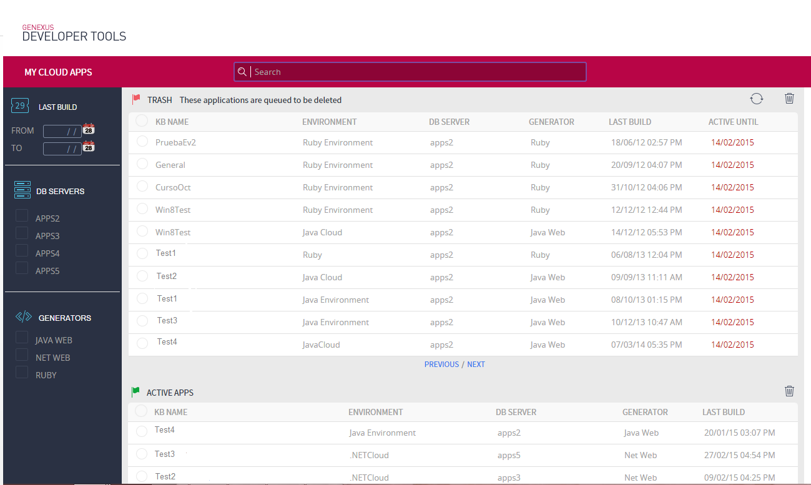

The objective of the Deployed Applications Administration application is to keep in GeneXus Prototyping Cloud servers the applications that are actually being used for prototyping purposes, in order to improve server performance and avoid overloading them with applications that are not used (GeneXus applications that have the Deploy to cloud property set to Yes).
That is to say, servers should store only those applications being used for prototyping; when applications have been inactive for a certain period, they are assumed to be no longer in use and are marked for deletion.
Deletion means removal from the database, the database user, and its virtual directory.
The deletion mechanism is enabled for applications stored in servers Apps5, Apps6, and Trialapps3.
Deletion Mechanisms
Deletion mechanisms are based on the Terms and Conditions of use of the GeneXus Cloud.
To use the cloud, users must agree to these terms and conditions. Otherwise, their use of the cloud will be restricted and their applications will be deleted.
There are two ways to remove an application from the cloud:
- The application's user (owner) decides to delete his/her application from the cloud.
Users can mark their applications for deletion from the cloud using the application My Cloud Apps
- A daemon detects inactivity for a certain period of time and marks it for deletion, after notifying the user (an email is sent to the user to notify him of the situation).
In order for the server to maintain only the applications currently being used, a mechanism for detecting and deleting inactive applications has been developed.
The application shows two grids:
- The first one (TRASH) shows the applications that have been marked for deletion by the user, or by the inactivity daemon, but that haven't been physically deleted yet.
- The second grid (ACTIVE APPS) shows the list of active applications.

In the active applications grid, select the application to be deleted and click on the trash bin icon
Deletions performed by the user only change the application's status. Then, the daemon will select this application and physically delete it from the server the following day. As long as an application is not physically deleted, it will remain in the TRASH grid.
They are applications that have been marked for deletion by the user or by the inactivity daemon.
This is handled with two application statuses:
- Deleted by the user
- Deleted by housekeeping
Applications marked for deletion by the user will be physically deleted the day after they have been marked.
There is a period of time between the moment the user marks the application for deletion and the moment it is physically deleted (less than 24 hours). During this period, the user can restore this application and set it as active.
Applications marked for deletion by the housekeeping daemon will be deleted 15 days after they have been marked for deletion. During this period (15 days), the user can restore this application and set it as active.
It can be done in two ways:
- Press F5 on the GeneXus KB in order to generate a new request and set the application as active again.
- In the application “My Cloud Apps,” look for the application queued for deletion in the TRASH grid, select it and click on the restore icon
In this way, the application returns to “active” status. Also, it will be shown in the second grid, that of active applications.
Deploy to Cloud Applications Administration FAQ
Terms and Conditions of use of the GeneXus Cloud
|